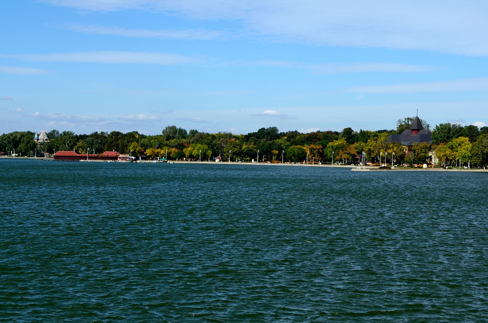

Север наше земље богат је природним благодетима, а једна од њих је, свакако, пелепо тиркизно-зелено језеро Палић. Обала Палићког језера је дуга 17 км, па је због тога јако привлачна пешацима, пецарошима, љубитељима птица. Највеће језеро у Србији већ дуг низ година окупља велики број туриста због своје уникатне лепте, јединствености, природе и богатих садржаја за све госте.
